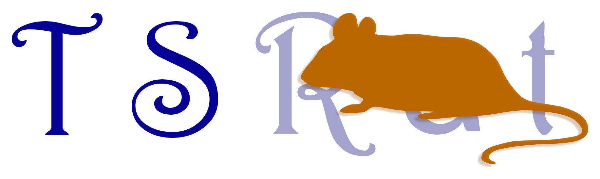
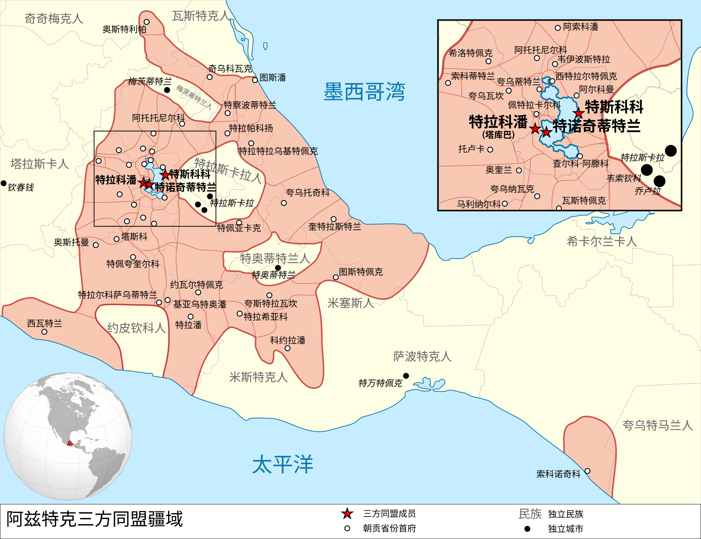
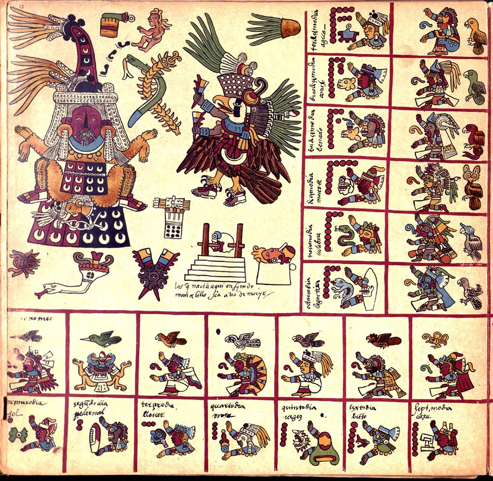
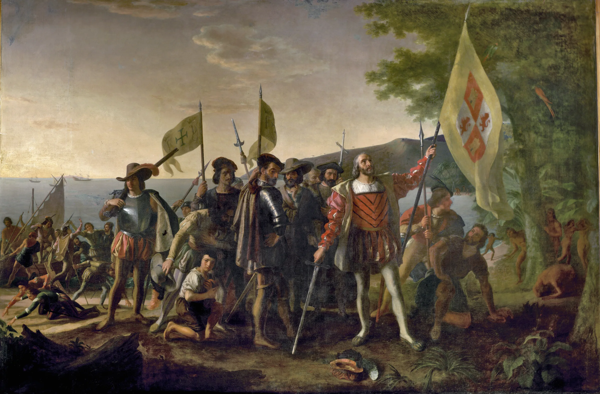
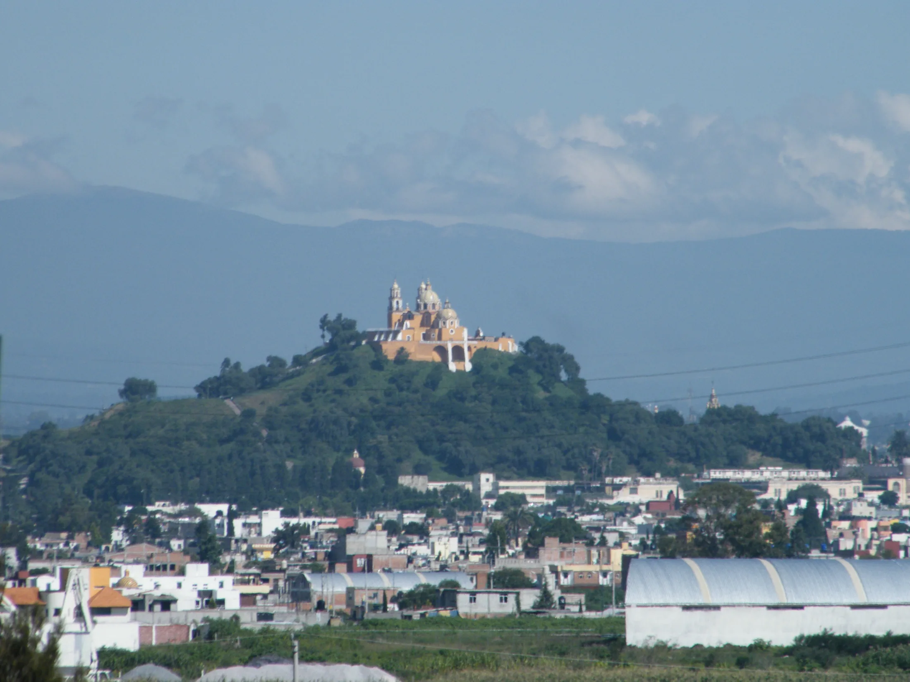

一位被奴役、转交，并重新命名的纳瓦女性。
她约生于 1500 年，原名没有留下。童年时被卖入奴隶网络，1519 年又被交给科尔特斯的远征队。

Daughters of Time · 00300时间的女儿 · 003
LA MALINCHE / MALINTZIN / DOÑA MARINA
谁背叛了背叛者？
一位被转卖的纳瓦女孩，后来成为连接纳瓦特尔语、玛雅语与西班牙语的翻译者。 她影响了征服，也在数百年后被写成“背叛”的象征。

01一个人 · 三个名字
每个名字都来自一套权力关系：出生的世界、受洗后的秩序，以及后世替她制造的意义。
三个名字同时保留：出生世界、殖民秩序与后世记忆，先后在同一个人身上留下名称。
02先认识她
一分钟认识马琳切，再进入她生活过的世界。
她约生于 1500 年，原名没有留下。童年时被卖入奴隶网络，1519 年又被交给科尔特斯的远征队。
她先把纳瓦特尔语译成玛雅语，后来又学会西班牙语。谈判、停战、结盟与命令因此能够跨越语言边界。
她帮助征服更有效地发生，也长期处于被奴役与依附之中。本网页追问影响、选择与责任如何区分。
03阅读坐标
由现存记录、时间线与多方材料相互支持。
面对冲突或不足的证据，保留“可能”。
组织因果的讲述方式，不替代私人证词。
名字、断裂、湖面与红线构成当代设计语言。
十六世纪初的中部美洲没有统一的“墨西哥国家”。数百座城邦各有统治者、军队、神庙与政治选择。
先看城邦、三国同盟、贡赋、宗教与奴隶制度，再回到马琳切的童年。
05中部美洲 · 城邦林立
城市及其周边土地组成独立或半独立的政治单位。共同语言、贸易与宗教传统让它们相互联结， 却不会自动让它们服从同一个统治者。

06三国同盟 · 贡赋圈
1428 年以后，特诺奇蒂特兰、特斯科科与特拉科潘结成三国同盟。 征服地区通常保留地方统治者，但必须定期交出棉布、可可、羽毛、粮食、贵重物与劳力。
历史事实“阿兹特克”是后世常用总称；这里用“墨西加”指特诺奇蒂特兰的主要群体。

07神祇 · 战争 · 祭祀 · 奴役
中部美洲各政体拥有不同的地方传统，也共享相互关联的历法、神祇与祭典。 仪式安排农耕、战争和王权活动；统治者借祭祀展示自己能够维系人与神的关系。
08约 1500 · 奥卢特拉
她大约出生于今天墨西哥湾沿岸附近。具体年份、地点与出生名都无人知晓。 奥卢特拉附近连接纳瓦语与玛雅语世界，也连接海岸贸易、地方权力与人口转卖网络。

这片边缘地带连接纳瓦语与玛雅语世界，也连接贡赋网络、海岸贸易与地方权力。
09贵族少女 · 史料线索
征服者记录称她是地方首领之女。她后来能在统治者面前使用礼仪性很强的纳瓦特尔语， 也熟悉贡赋、称谓和外交程序；这些线索支持贵族出身的可能性。
她出身地方贵族家庭，但记录来自多年后的西班牙叙述。
熟练使用宫廷式语言通常需要接近权力中心的训练。
出生日期、原名、童年感受与家庭决定没有第一人称证词。
10从贵族少女到奴隶
史料给出不同故事，现存证据不足以让其中一种完全胜出。
一种叙述称母亲再婚后，为保护新家庭的继承，把她交给了商人。这个故事流传最广，却也可能经过道德化整理。
另一种解释把她放进地方战争、政治交换或贡赋网络中。两种解释都指向同一处境：她没有自由选择离开家园。
11被迫南下的路线
她可能先被带到重要贸易节点希卡兰戈，后来又进入玛雅语世界的波顿查恩。 地理位移同时切断了亲族、身份与原有语言环境。

12在陌生世界活下来
在玛雅语世界生活多年后，她掌握当地语言。学习语言可以是适应，也是被迫生活留下的技术。
语言先救她活下去，后来也被战争征用。此时她不知道西班牙在哪里，也不知道这些人的远征将走向哪里。
故事暂时跟随她能够看到的世界：船、马、金属武器、陌生语言，以及战败后的命令。

141519 · 波顿查恩战败
陌生远征队与波顿查恩军队交战。当地领袖求和时交出粮食、黄金和二十名女性； 马琳切是其中之一。她没有选择参战，也没有选择被当作礼物。
马与金属武器造成陌生而强烈的冲击。
地方领袖通过礼物和人质安排求和。
她与十九名女性一起被交给远征队。
她从一个不自由的主人手中进入另一套不自由秩序。

15受洗 · 重新命名
女性们先接受洗礼，再被分配给远征队成员。新名字把她纳入基督教秩序，没有取消她被占有和转交的处境。
16语言带来的位置变化
远征队原有的翻译阿吉拉尔会西班牙语和玛雅语，却不会纳瓦特尔语。 当马琳切能把纳瓦特尔语译成玛雅语，一条完整的对话链突然出现。
她同时熟悉纳瓦特尔语和玛雅语，还理解地方礼仪与政治称谓。
尊称显示西班牙人承认她的贵族举止和重要性，却不等于她获得自由。
她从被分配的女性，变成科尔特斯必须带在身边的语言与外交行动者。
17最初的翻译链
每个词都带着无法直接替换的政治含义。
纳瓦特尔语 → 玛雅语 → 西班牙语
征服者的概念通过她进入另一个政治宇宙。
18称呼随着翻译扩散
纳瓦语使用者把 Marina 与敬称后缀 -tzin 结合成 Malintzin； 西班牙语记录又把它写成 Malinche。
一些纳瓦语叙述也用这个名称称呼科尔特斯，因为他的声音总是经由她传出。

19公开的翻译者 · 私下的不自由
她在公开场合站在统治者与使者之间，拥有越来越重要的发言位置； 私下仍依附于科尔特斯，并后来为他生下一个儿子。
她没有留下第一人称证词。在奴役与军事占领关系中，自由同意的条件极其有限；因此可以讨论强迫与可能的性暴力，但不能编造她的私人感受。

20托托纳克 · 第一场政治谈判
托托纳克城邦长期向三国同盟交纳贡赋。新来者抵达后，地方领袖尝试利用他们改变力量平衡。 马琳切把不满、试探和条件送进远征队的决策中心。
她第一次看见：语言可以把地方怨恨转化为补给、向导与盟军。21她开始直接听懂陌生人
她在反复翻译中学习西班牙语，也逐渐听懂这些人来自一个遥远王国， 以国王和基督教之名要求臣服、改宗与财富。
当她能够绕过阿吉拉尔直接翻译，信息更快，她的地位也更高； 她同时更清楚远征队要把沿途政治关系变成占领。
22视野越过海岸
她逐渐听懂：这些人来自海洋另一端的王国，以君主和基督教之名远征。 要理解他们为什么抵达尤卡坦、科尔特斯如何获得远征权，以及他们所说的“占有”意味着什么，需要回到十五世纪的伊比利亚与大西洋。


24伊比利亚 · 王权与征服者
卡斯蒂利亚与阿拉贡的王权结盟，并在格拉纳达陷落后结束长期的伊比利亚战争。 军事扩张、宗教统一与王权竞争随之加速转向海洋。

25哥伦布抵达加勒比
卡斯蒂利亚王室支持哥伦布横渡大西洋。他抵达的是加勒比海岛屿，并误以为接近亚洲。 随后更多航行把人员、疾病、武器、牲畜和殖民制度带入美洲。
26什么是西班牙殖民地？
殖民者建城、任命官员、征收财富、要求改宗，并把原住民劳力分配给征服者。 加勒比岛屿成为后续远征的港口、兵源、物资库和政治试验场。
用欧洲式市政机构宣布新的合法秩序。
黄金、农产与劳力被纳入殖民经济。
教会与王权一起重塑生活和合法性。
征服者获得对原住民社区征取劳役与贡赋的权利。

27科尔特斯在古巴
伊斯帕尼奥拉与古巴的殖民据点，让远征者熟悉了强迫劳动、夺取资源、建立据点与利用地方竞争。 科尔特斯也在加勒比殖民社会中积累人脉、财富与政治经验。
科尔特斯在古巴获得土地、劳力、财富和市政经验，也学会如何在殖民者之间经营权力。
历史事实具体暴力与制度在不同岛屿、时期并不完全相同；这里说明的是经验和网络，而非一条不可避免的命运。
281519 · 未获完全授权的远征
数百名西班牙人不足以单独征服中部墨西哥。他们的力量来自武器，也来自把地方人力、情报与补给接入远征。
规模有限，并且持续面临补给、疾病与内部权力冲突。
制造冲击和战术优势，但这些物件不会自动带来胜利。
真正放大队伍的，是每到一地重新结成的关系网络。
马琳切的重要性正在这里出现：她让陌生的政治世界能够被询问、试探与谈判。
29她已经明白远征的方向
她听懂了西班牙人的目标，也看到沿岸城邦正在利用新来者对抗贡赋秩序。 此后她不只回答语言问题，还主动解释路线、礼仪、盟友与危险。
留在远征队中心，比再次被分配更可能保住生命与位置。
原文以叙事框架提出：被家庭与地方秩序抛弃的经历，可能影响她的判断。
她意识到自己的语言、记忆和政治知识是稀缺力量。
帮助远征前进，也使她更深地参与此后发生的征服与暴力。
30韦拉克鲁斯 · 法律上的脱离
古巴总督试图撤销远征。科尔特斯让支持者在海岸建立韦拉克鲁斯市政机构， 再由市政官员直接任命他为总司令，绕过古巴总督的权力。
这套法律安排让一场有争议的远征，转成以西班牙国王名义继续的军事行动。
31先认识特拉斯卡拉
特拉斯卡拉是由多个政治中心共同构成的强大政体。它与墨西加人同属纳瓦语世界， 却长期保持独立，并在三城同盟的包围与贸易压力下持续对抗。
共同语言不等于共同国家，也不自动产生政治忠诚。
它拥有自身领袖、军队与目标，并主动选择下一步行动。
没有特拉斯卡拉等原住民盟军，几百名西班牙人无法独自完成征服。
32特拉斯卡拉 · 从战争到联盟
一支来历不明的武装力量进入领地，首先引发的是抵抗。数周冲突后， 双方才在损失、技术差距与共同敌人的现实中重新计算利益。
特拉斯卡拉军队把进入领地的陌生武装视为威胁，连续发动攻击。
西班牙军队一度接近崩溃，也用骑兵、钢制武器与村庄袭击制造压力。
马琳切翻译威胁、条件与政治称谓，使双方能够判断彼此真正能提供什么。
特拉斯卡拉领袖决定接待远征队，并把对三国同盟的长期敌意转化为军事合作。此后加入远征的原住民盟军远多于西班牙人。

33先认识乔卢拉
乔卢拉是重要的宗教与贸易中心，以羽蛇神信仰和巨型金字塔闻名。 它位于通往特诺奇蒂特兰的路线上，与墨西加政治网络关系密切； 西班牙—特拉斯卡拉联军进入这里，本身就是一次高度紧张的政治行动。

341519 · 乔卢拉大屠杀
联军在城中发动大规模杀戮。科尔特斯声称自己发现了伏击；特拉斯卡拉叙述强调旧怨与使者受辱； 后来的墨西加叙述则把责任归向特拉斯卡拉。各方都在为自身行动组织理由。
据称，一位乔卢拉女性向她透露伏击计划。但故事来自征服者叙述，可能也承担为“先发制人”暴力辩护的功能。
她是否、如何获得警告，以及信息影响多大，都需来源批判；发动并实施屠杀的决定仍属于持有军事指挥权的人。

35湖上的堤道
1519 年 11 月，西班牙人与数量更多的原住民盟军沿堤道进入特诺奇蒂特兰。

361519 年 11 月 8 日 · 相遇
蒙特苏马以外交礼仪迎接来者；科尔特斯带着王权与占有的主张进入。礼物、称谓、主权声明与威胁都要穿过翻译链。
她能解释话语，却不能让双方共享同一套政治规则。她对蒙特苏马、科尔特斯或这座城市的私人感受无人知晓。

37黄金 · 神庙 · 软禁
西班牙人追问黄金、冲击宗教空间，并把蒙特苏马控制在自己手中。
马琳切继续翻译命令、要求与解释。她的能力扩大了西班牙人的行动范围，也让她更深地卷入暴力。
承认她的作用，不等于把决定战争的人从责任中移走。38从宾客到占领者
蒙特苏马一方用礼物、住处与外交仪式管理来客；科尔特斯一方则不断索取黄金、 介入宗教空间并软禁统治者。冲突不是突然“误会”出来的，而是在武装占领中不断累积。
双方仍能交换言辞与礼物，但共享词语不等于共享规则。
软禁蒙特苏马后，翻译开始更多服务于命令、索取与威胁。
城市并非被动等待；政治压力与宗教暴力终于触发公开反击。
能把命令翻译出来，不等于拥有下达或撤回命令的权力。

391520 · 托斯卡特尔节
科尔特斯前往海岸处理另一支西班牙军队，把城内指挥权交给佩德罗·德·阿尔瓦拉多。 宗教节庆进行时，西班牙士兵封锁出口并袭击参与者。
西班牙叙述常声称发现袭击计划，原住民叙述则强调无武装庆典遭到突袭。动机仍有争议，但阿尔瓦拉多部队发动大规模杀戮并不因争议消失。

40反击 · 调停失败
杀戮后，特诺奇蒂特兰全面反击。西班牙人试图让被控制的蒙特苏马出面平息局势， 但他的政治权威已经破裂；关于他如何受伤、如何死亡，原住民与西班牙记录互相冲突。
话语可以被传达，调停条件也可以被解释。
当说话者失去信任，准确翻译也无法恢复被武力摧毁的秩序。
41翻译者的边界
马琳切仍在翻译、传递消息、参与谈判，也因此真实地帮助西班牙人的行动更有效。 但祭典杀戮、囚禁与撤军的军事决定，由掌握武装和指挥权的人作出。
作用，不等于主权；参与，不等于唯一责任。
421520 年 6 月末 · 悲痛之夜
西班牙人与盟军试图趁夜沿堤道撤离。城市守军反击，队伍在狭窄通道上拥挤溃散； 许多人死于战斗、负重、踩踏或溺水。马琳切活了下来。
这不是战争的结束，只是力量重新集结前的一次崩溃。败退者在特拉斯卡拉重整，新的欧洲援军、更多原住民盟军、天花与湖上战术一起改变了力量平衡。
最后围攻这座城市的，绝不只是几百名欧洲人。

441520—1521 · 疫病与重整
天花在中部墨西哥传播，造成大规模死亡并扰乱政治与军事组织。与此同时， 科尔特斯在特拉斯卡拉获得庇护、补给与盟军，并吸收了原本来逮捕他的西班牙士兵。
疫病极其重要，却没有独自“攻下”城市；盟军、封锁、火力、饥饿和持续作战共同造成结果。

45湖上战争 · 十三艘双桅帆船
木料与部件被运到湖边组装成十三艘双桅帆船。它们与独木舟、岸上盟军和堤道攻势配合， 让西班牙—原住民联军能够切断湖上交通，并反复攻击城市边缘。

461521 年春夏 · 多月围攻
联军逐区推进，又反复遭遇反击。围城不是一场决斗，而是对城市生活条件的系统压缩。
渡槽、独木舟路线与湖面交通被攻击。
外围城镇与补给通道被逐步切断。
三条堤道成为拉锯战场，缺口不断被填平又挖开。
疾病、饥饿与持续战斗同时消耗军民。
马琳切继续参与翻译与谈判；她帮助征服更有效地发生，但没有指挥舰船、盟军或围城部署。

471521 年 8 月 13 日 · 瓜乌特莫克被俘
瓜乌特莫克接手抵抗后，守军继续在饥饿、疾病与废墟中作战。双方多次交换信息， 但投降条件没有形成共同接受的秩序。最后，他在湖上撤离时被俘。
翻译能让条件被听见，却不能替双方制造可以接受的世界。
特诺奇蒂特兰的陷落是殖民统治的开端，不是暴力的终点。
48战争以后
继续参与远征与外交
拥有财产
生育子女
与胡安·哈拉米约成婚
她与科尔特斯的关系不能只写成爱情，也不能只用现代的单一关系词概括。权力、性别、依附、策略与生存彼此纠缠。
她何时去世、因何去世，史料众说纷纭。晚年不是一个已经被完整找回的结局。
幸存不是自由的同义词。能动性与强迫可以同时存在。上下集在此直接播放；站内其他位置不使用视频封面。
49Malinchismo
数百年后，“malinchismo”被用来指责崇洋、出卖本国与否定自身文化。 一个十六世纪的原住民女性，被放进后来才形成的民族国家想象里受审。
她的语言、信息与外交工作帮助了征服，也使殖民暴力更有效地推进。
她先被奴役、被转交；后世又把共同历史创伤压在她一个人身上。
50重新阅读
为什么殖民者的决策常被解释为政治，而女性的生存策略却被解释为道德缺陷？
不把所有地方群体抹成同一个阵营，也不让殖民暴力因内部联盟而失去名字。
她是在强迫、机会、危险与不完整选择之间行动的人。
51把问题留给读者
这里没有唯一正确选项。选择只改变下方的阅读回应，不会被保存或发送。
选择一个角度，继续检视“责任”与“选择”之间的距离。
来源与证据边界
21 页中文原稿《马琳切：谁背叛了背叛者？》，按八章组织；两份中文字幕稿补充影像叙事。
本页使用来自 Gallica、Newberry Library 与 Wikimedia Commons 的公共领域或 CC 授权图像；自制地图仅用于其确实对应的路线与地点。
不连接分析服务，不设置跟踪 Cookie，不保存名字视角、地图选择或最终回应。